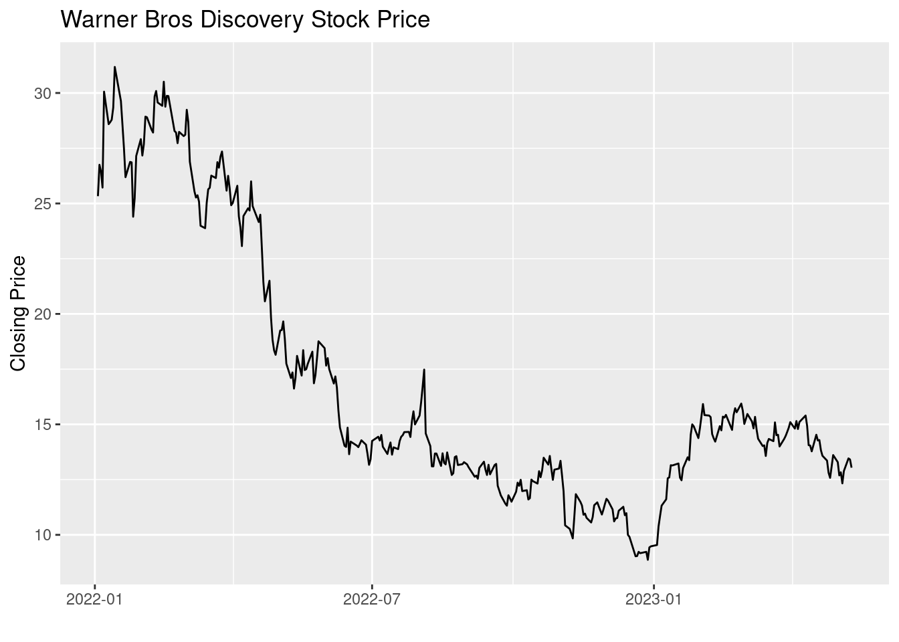

Custom Walkthrough/Tutorial
Guide on Gathering and Presenting Financial Information Using R
For this walkthough and example we are going to be detailing how to use R to find and present stock information. We will begin by looking at Netflix’s stock in a chart and graph formats, then we will do the same for Warner Bros Discovery, then we will compare four companies graphs al next to each other.
We begin here with this first chunk; like most R programs this is where we establish and incorporate packages. Packages are essentially just helpful functions other people have made that we can use to make things simpler and our code tighter. For this example we will be using the tidyverse and tidyquant libraries which give us a wide variety of feature that are helpful for many applications of R.
library(tidyverse)
library(tidyquant)Gathering Data and Charting
We are next going to set a value named “ticker” to be “NFLX” for Netflix. Now when we type ticker later in the code it will be the same as if we typed out “NFLX”. This saves time in some instances, and makes it easier to change later since we only need to change this value once right here instead of any point in the code that uses it.
ticker <- "NFLX"Next, we will use the tq_get function, which is part of tidyquant, to download the data of our stock. The data we get includes date, open, high, low, and close prices for each day that is in our range given. We give the range of from January 1st 2022 so we have all the data of the past year and a half, as of writing. We save all of this data as “nflx_data” for the same reasons we saved a variable “ticker” At the end, typing out the name of the the dataset we’ve just created presents us with a full spreadsheet of the data downloaded.
nflx_data <- tq_get(ticker, get = "stock.prices", from = "2022-01-01")
nflx_data# A tibble: 340 × 8
symbol date open high low close volume adjusted
<chr> <date> <dbl> <dbl> <dbl> <dbl> <dbl> <dbl>
1 NFLX 2022-01-03 606. 610. 591. 597. 3067500 597.
2 NFLX 2022-01-04 600. 600. 582. 591. 4393100 591.
3 NFLX 2022-01-05 592 593. 567. 568. 4148700 568.
4 NFLX 2022-01-06 554. 563. 542. 553. 5711800 553.
5 NFLX 2022-01-07 549. 553. 538. 541. 3382900 541.
6 NFLX 2022-01-10 538. 544. 526. 540. 4486100 540.
7 NFLX 2022-01-11 537. 544. 530. 541. 3077800 541.
8 NFLX 2022-01-12 544. 544. 532. 537. 3787400 537.
9 NFLX 2022-01-13 537. 541. 518. 519. 4475100 519.
10 NFLX 2022-01-14 518. 538. 512. 526. 7861100 526.
# … with 330 more rowsWe use the ggplot and geom_line functions to utilize some of the data we just gathered. With these functions we can very easily make a simple line chart of, for our purposes, the date and close values we got previously. in the aes() portion of the ggplot function is where we can change the x value and y values.
ggplot(nflx_data, aes(x = date, y = close)) +
geom_line()Now we’re going to begin a similar process with another companies stock information, Warner Bros Discovery. First, we change the value of “ticker” to be “WBD” to reflect the new value being used. We begin the same as before saving all of the information downloaded into “wbd_prices”.
ticker <- "WBD"
wbd_prices <- tq_get(ticker, get = "stock.prices", from = "2022-01-01")
wbd_prices# A tibble: 340 × 8
symbol date open high low close volume adjusted
<chr> <date> <dbl> <dbl> <dbl> <dbl> <dbl> <dbl>
1 WBD 2022-01-03 23.9 25.8 23.8 25.3 10231100 25.3
2 WBD 2022-01-04 25.8 27.2 25.6 26.8 12074000 26.8
3 WBD 2022-01-05 27.1 28.0 26.4 26.5 12532200 26.5
4 WBD 2022-01-06 26.6 26.8 25.6 25.7 7197300 25.7
5 WBD 2022-01-07 27.6 31.2 27.3 30.1 42891900 30.1
6 WBD 2022-01-10 30.2 30.4 28.3 28.6 12117000 28.6
7 WBD 2022-01-11 28.9 29.3 28.0 28.7 7014100 28.7
8 WBD 2022-01-12 28.5 29.2 28.3 28.8 5045200 28.8
9 WBD 2022-01-13 28.9 30.0 28.4 29.3 9016100 29.3
10 WBD 2022-01-14 28.9 31.3 28.9 31.2 12183400 31.2
# … with 330 more rowsHere we use the %>%, or the pipe, tool to pull up a dataset we’ve established before. This is done when we want to present some alteration to the data without editing and rerunning the code we’ve made before in this chunk. For this we are using the arrange function to sort our dataset in descending order by date, in other words from today to January 1st 2022 instead of from then to now. Because of certain things we *didn’t* do this will not actually edit our original dataset only present the editing dataset for us.
wbd_prices %>%
arrange(desc(date))# A tibble: 340 × 8
symbol date open high low close volume adjusted
<chr> <date> <dbl> <dbl> <dbl> <dbl> <dbl> <dbl>
1 WBD 2023-05-10 13.6 13.6 12.7 13.0 21790000 13.0
2 WBD 2023-05-09 13.3 13.5 13.2 13.4 20611200 13.4
3 WBD 2023-05-08 13 13.6 12.8 13.5 20909500 13.5
4 WBD 2023-05-05 11.8 13.0 11.6 12.9 43776200 12.9
5 WBD 2023-05-04 12.4 12.5 12.0 12.3 32200600 12.3
6 WBD 2023-05-03 12.8 13.1 12.8 12.8 15265700 12.8
7 WBD 2023-05-02 13.2 13.2 12.6 12.7 15663800 12.7
8 WBD 2023-05-01 13.6 13.7 13.2 13.3 13721700 13.3
9 WBD 2023-04-28 13.1 13.7 12.9 13.6 16908600 13.6
10 WBD 2023-04-27 12.8 13.2 12.6 13.1 19979600 13.1
# … with 330 more rowsWe once again use the pipe tool to bring the “wbd_prices” dataset into this chunk. We then run essentially the same code we ran earlier with ggplot and geom_line, but with a slight addition. We are able to add labels to the charts we create here, so we label the whole chart as well as give a new label to close being “Closing Price” to be a bit more user friendly.
wbd_prices %>%
ggplot(aes(x = date, y = close)) +
geom_line() +
labs(title = "Warner Bros Discovery Stock Price", y = "Closing Price", x = "")
Now we add geom_ma function which displays the moving average of the chart over time which we set to the color green.
wbd_prices %>%
ggplot(aes(x = date, y = close)) +
geom_line() +
labs(title = "Warner Bros Discovery Stock Price", y = "Closing Price", x = "") +
geom_ma(ma_fun = SMA, n = 50, color = "green", size = 1.25) +
theme_minimal()Warning: Using the `size` aesthetic in this geom was deprecated in ggplot2 3.4.0.
ℹ Please use `linewidth` in the `default_aes` field and elsewhere instead.Multiple Companies
We begin with the same process as before, but in tq_get we can type q() and within that type out multiple stock names instead of one. This gathers all four companies data in one huge dataset. We then use the count function to count how many of each symbol, stock name, there are in the dataset, so it counts how many entries each of the four companies have and presents that in a much smaller dataset.
mycompanies <- tq_get(c("WBD", "NFLX", "DIS", "AAPL"),
get = "stock.prices",
from = "2022-01-01")
mycompanies # A tibble: 1,360 × 8
symbol date open high low close volume adjusted
<chr> <date> <dbl> <dbl> <dbl> <dbl> <dbl> <dbl>
1 WBD 2022-01-03 23.9 25.8 23.8 25.3 10231100 25.3
2 WBD 2022-01-04 25.8 27.2 25.6 26.8 12074000 26.8
3 WBD 2022-01-05 27.1 28.0 26.4 26.5 12532200 26.5
4 WBD 2022-01-06 26.6 26.8 25.6 25.7 7197300 25.7
5 WBD 2022-01-07 27.6 31.2 27.3 30.1 42891900 30.1
6 WBD 2022-01-10 30.2 30.4 28.3 28.6 12117000 28.6
7 WBD 2022-01-11 28.9 29.3 28.0 28.7 7014100 28.7
8 WBD 2022-01-12 28.5 29.2 28.3 28.8 5045200 28.8
9 WBD 2022-01-13 28.9 30.0 28.4 29.3 9016100 29.3
10 WBD 2022-01-14 28.9 31.3 28.9 31.2 12183400 31.2
# … with 1,350 more rowsmycompanies %>%
count(symbol)# A tibble: 4 × 2
symbol n
<chr> <int>
1 AAPL 340
2 DIS 340
3 NFLX 340
4 WBD 340Much like before, we use ggplot and geom_line to present the graphs of the dataset we’ve created. We use a facet_wrap function to change what would have been one long line of charts into a 2x2 grid all of which are ordered and labeled by their symbol.
mycompanies %>%
ggplot(aes(x = date, y = close)) +
geom_line() +
labs(title = "", y = "Closing Price", x = "") +
facet_wrap(~ symbol, ncol = 2, scale = "free_y")Finally, we add another moving average line to each of our charts. From here we can use this to analyze the stocks of the four companies and compare and contrast, and because this is pulled from an online source they will continue to update since we set no end date.
mycompanies %>%
ggplot(aes(x = date, y = close)) +
geom_line() +
labs(title = "", y = "Closing Price", x = "") +
geom_ma(ma_fun = SMA, n = 50, color = "green", size = 1.25) +
facet_wrap(~ symbol, ncol = 2, scale = "free_y") +
theme_minimal()